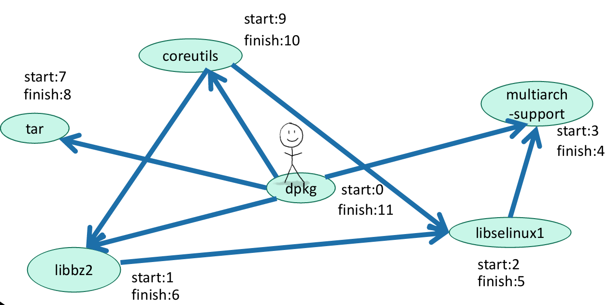
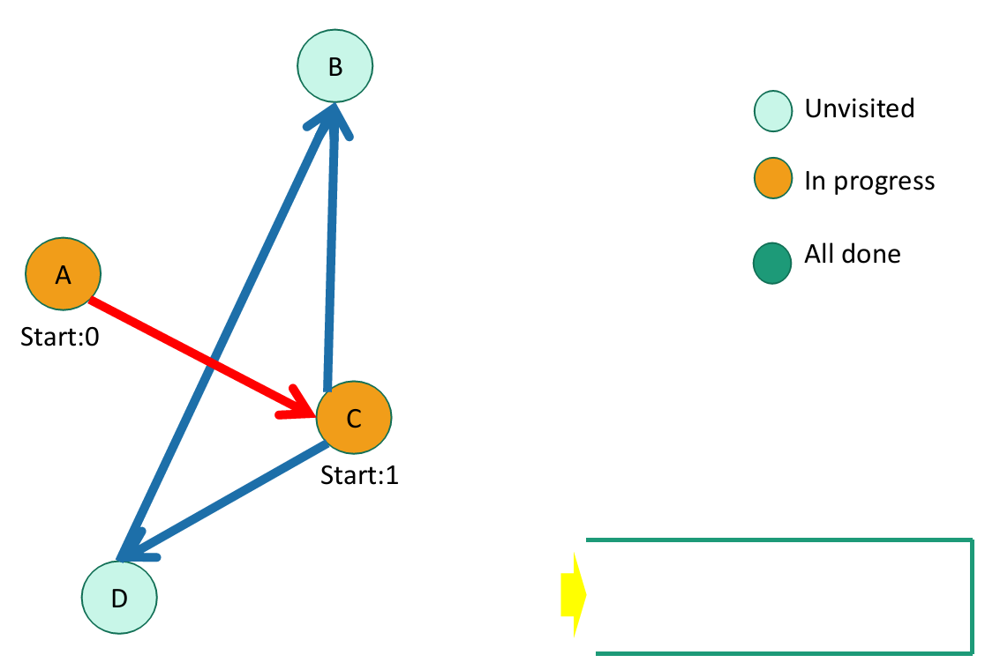

Algorithms week 9
Topological ordering
위상정렬
Application of DFS


dependencies를 고려해서 올바른 순서를 찾아주는 sorting -> topological sorting
Directed Acyclic Graphs
Topological ordering
Let’s do DFS

Finish times seem useful
A more general statement
Back to this problem
In reverse order of finishing time
Topological ordering
Example

Breadth-First search
How do we explore a graph?
Breadth-First Search
BFS also finds all the nodes reachable from the starting point
Running time
n = number of nodes
m = number of edges
Why is it called breadth-first?
Application: shortest path

To find the distance between w and all other vertices v
Recap
What if the graphs are weighted?
Dijkstra’s algorithm
Shortest path problem

A sub-path of a shortest path is also a shortest path
Single-source shortest-path problem